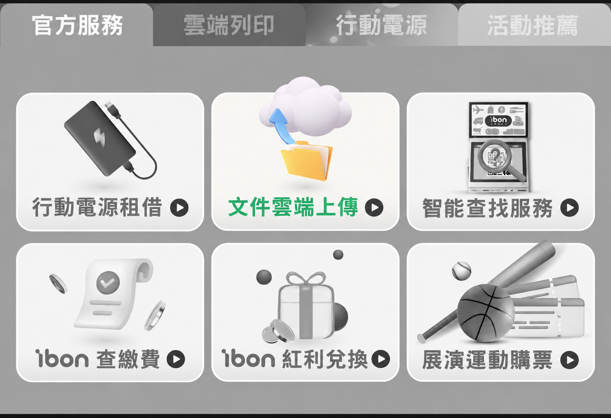

FLOWERS ON PAPER
把喜歡的花，
印成一張小卡。
親手安排的花，也能成為拿在手上的心意。
寫一句話送給朋友，或留一張在桌邊，收藏自己喜歡的創作。

從選一朵喜歡的花開始，做一張屬於你的小卡。
先在手機存好圖片
- 完成作品後，點「完成作品」，填好想說的話。
- 選「下載明信片用檔案」。檔案為 3240 × 4860 像素、4 × 6 比例，花與文字完整保留。
- iPhone 可在「檔案 → 下載項目」找到圖片；Android 可在「下載」找到。上傳時選擇這張原圖，避免使用截圖或通訊軟體壓縮過的圖片。
如果在 LINE 或 Instagram 內無法下載，請改用 Safari 或 Chrome 開啟本網站。
7-ELEVEN ibon
LINE 上傳，門市掃碼取件加入 ibon 官方 LINE
點下方按鈕，加入「ibon 便利生活站」官方帳號，開啟聊天視窗。
開啟 ibon 官方 LINE選「文件雲端上傳」
在聊天視窗下方的「官方服務」選單，點選中間的「文件雲端上傳」（如下圖），依指示選擇剛下載的明信片用檔案。請由上傳入口選擇原始檔案，避免直接傳送聊天照片被壓縮。

選擇上排中央的「文件雲端上傳」。 取得 QR Code，到 7-ELEVEN 列印
完成上傳後，保留 LINE 提供的 QR Code 或取件編號，依顯示期限到門市。到 ibon 掃碼或輸入取件編號，選擇 4 × 6 專用紙／相片列印，確認花與文字都完整，再依機台指示列印及結帳。
全家 FamilyMart FamiPort
手機網頁直接上傳開啟全家雲端列印
用手機瀏覽器開啟官方網站，按「新增檔案」，選取剛下載的 JPG，不必另外安裝 App。
開啟 FamiPort 雲端列印確認規格與列印碼
依網站指示上傳，選擇彩色、4 × 6 相片紙及份數，確認預覽並取得列印碼。若網頁沒有提供紙張選項，請在門市機台選擇；依網站顯示的有效期限取件。
到全家輸入列印碼
在 FamiPort 選「列印／查詢 → 雲端列印 → FamiPort 雲端列印」，掃描或輸入列印碼，確認檔案、紙張與預覽，再依機台指示列印及結帳。
印出前，再看一眼
確認整朵花、祝福文字和署名都有出現在預覽中。若可選擇縮放，選完整顯示／符合紙張，避免填滿裁切。印出的色彩可能和手機略有不同，建議先試印一張。
這裡介紹的是超商的 4 × 6 相片／專用紙列印，可作為小卡使用，並非雙面明信片印刷服務。紙材、供應門市、機台選單及費用以現場與官方公告為準。
教學查核日期：2026 年 9 月 24 日